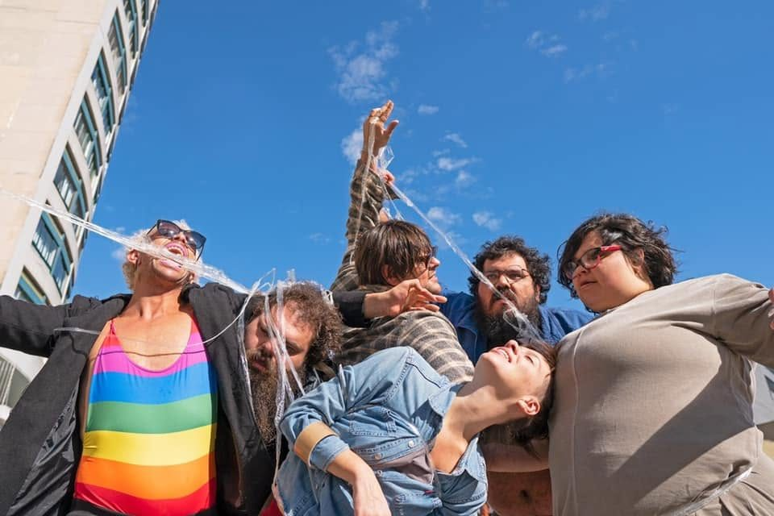
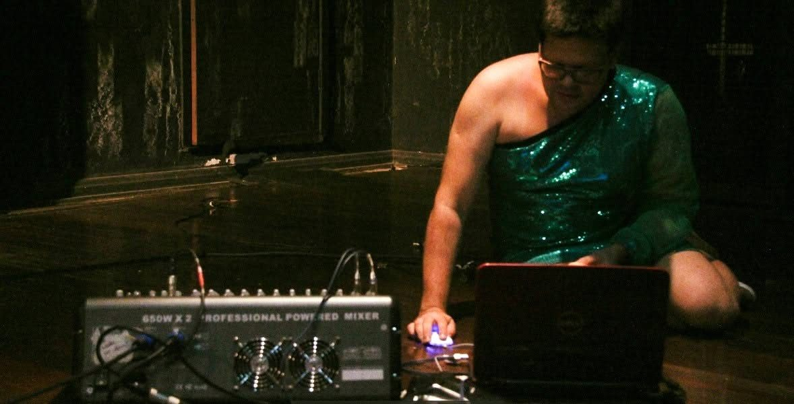

Colaboração dramatúrgica com a artista brasileira Mari Paula, radicada na Espanha. Um trabalho sobre a sensação de ser estrangeiro.
A colaboração foi feita a distância, ainda no período pandêmico: eu propunha metodologias, instruções e exercícios para que ela experimentasse, esticasse e expandisse o material que já tinha.
Luxuosas Ficções para o Fracasso
2019 · Mostra Solar, Casa Hoffmann, Curitiba
Criação coletiva da Selvática Ações Artísticas, com Gabriel Machado, Jussara Belchior, Mari Paula, Princesa Ricardo Marinelli, Ricardo Nolasco e Rubia Romani. Edital Coletivos em Residência, Fundo Municipal de Cultura de Curitiba. Teve também uma versão de rua.
Foto: Cibele Gaidus

Luxuosas Ficções para o Fracasso, 2019. Foto: Cibele Gaidus.
Pão com Linguiça
2017 · Cia dos Palhaços, Curitiba
Criação sonora ao vivo no espetáculo de dança de Ronie Rodrigues e Gladis Tridapalli, da Cia Entretantas Conexão em Dança. Integra trilogia, ao lado de Cachaça sem rótulo e Pátrya. Remontagem em 2020.

Criação sonora ao vivo em Pão com Linguiça, 2017.
La Lucha
2013–2014 · Prêmio Funarte Klauss Vianna de Dança
Criação com Leonarda Glück, Gabriel Machado e a uruguaia Lucía Náser.
O ponto de partida foi um documentário sobre Los Exóticos, trupe mexicana de luta livre que luta caracterizada de drag. Daí veio a vontade de fazer algo que misturasse espetáculo e competição esportiva — com um público que torce, ri, grita, entra e sai, bebe e conversa.
Estreia na boate Il Tempo, Montevidéu, onde o espetáculo veio acompanhado de uma conversa de formação com Leonarda Glück, a Fala Performática — Travestindo o mundo. Em Curitiba, numa escola de pole dance. Circulou até o Sesc Consolação, São Paulo (2017). Estrear numa boate e apresentar numa escola de pole dance não foi acaso — os espaços faziam parte da ideia.
A gente quer algo engraçado, dramático, violento, que possa envolver as pessoas, e que a gente também possa se surpreender fazendo.
ao Curitiba Cult, 2014
Orientação dramatúrgica e coreografia: Carmen Jorge · Luz: Fábia Regina · Trilha: Jo Mistinguett · Fotografia: Persichetti
La Lucha — Lucía Náser, Gustavo Bitencourt, Gabriel Machado e Leonarda Glück. Foto: Persichetti.
Travesqueens
2011, 2012 e 2015
Projeto de Princesa Ricardo Marinelli, com Elielson Pacheco e Erivelto Vianna. Intervenção sonora.
São Paulo · Bienal Sesc de Dança / Conexão Dança, Sesc Santo Amaro · Mostra Cuore di Brasile, Bolonha, Itália (2015)
Receitas e Dúvidas
2011 · Teatro José Maria Santos, Curitiba · Prêmio Klauss Vianna, Funarte
Colaboração com Sheila Ribeiro e Wagner Schwartz. Não havia direção: éramos três artistas tomando decisões juntos. Temporada de um mês em Curitiba. Também no Itaú Cultural e no Modos de Existir, Sesc Santo Amaro, São Paulo (2012).
Eu entrava de máscara e com figurino de yuppie dos anos 1980. Em algum momento avisava que talvez não estivesse ali. A regra era que os três nunca se observassem em cena, para não destruir o que estava sendo construído. Tinha karaokê de Madonna, tango, e os mortos das nossas famílias convocados para a cena.
Uma terra de passagem [...] que, com uma delicadeza com a qual não se encontra muito por aí, faz o mundo ficar mais vasto.
2011 · FIAC — Festival Internacional de Artes Cênicas da Bahia, Salvador
Residência de pouco mais de um mês com a atriz Paula Lice, do grupo Dimenti, que me convidou para dirigir seu solo. Uma brincadeira construída com música, a partir das referências dela de dublagem e de drag queen. Salvador tem uma cena drag muito forte, e a Paula era fascinada pelo transformismo. Foi naquele processo que nós dois começamos a nos montar.
Peça de pessoa, prego e pelúcia
2010 · Teatro Novelas Curitibanas, Curitiba
Criação coletiva do Couve-Flor, sem direção, com Cândida Monte, Elisabete Finger, Neto Machado e Ricardo Marinelli. Financiamento da Fundação Cultural de Curitiba para pesquisa teatral. Também no Festival Interação e Conectividade, Salvador.
Projeto Tim Burton
2009–2010 · Prêmio Klauss Vianna de Dança, Funarte
A partir do livro A Morte Melancólica do Rapaz Ostra e Outras Estórias, o Couve-Flor investigou o que definimos como "uma corporeidade bizarramente específica". O projeto gerou dois desdobramentos.
O rapaz e a rapariga — espetáculo coletivo, infantil, com os seis integrantes. Temporada no Teatro Novelas Curitibanas e apresentação no Festival Interação e Conectividade, Salvador.
6 por ½ dúzia — seis solos, um de cada integrante, apresentados numa mesma temporada no Teatro Universitário de Curitiba. O meu era Pig Lalangue.